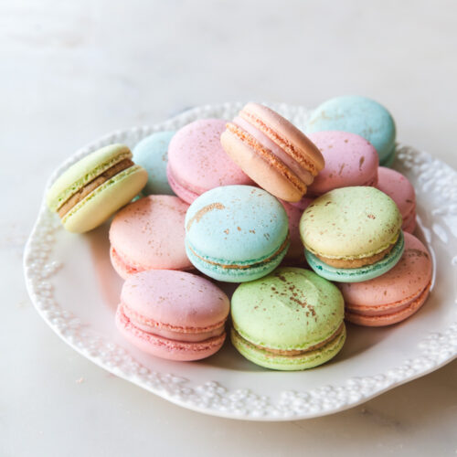
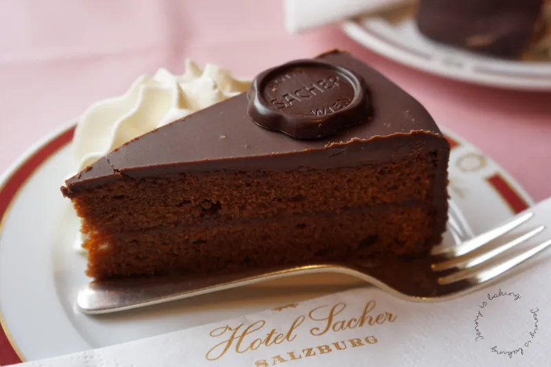

Buttery croissants are flaky, golden pastries with a rich, melt-in-your-mouth texture that comes from layers of dough lovingly folded with butter.

Pastel de nata is a Portuguese custard tart with a crisp, flaky pastry shell and a creamy, caramelized egg custard center, often dusted with cinnamon for a warm, aromatic finish.

Baklava is a rich, sweet pastry made of delicate layers of filo dough filled with chopped nuts and soaked in honey or syrup, creating a crisp, sticky, and indulgent treat.

Macarons are delicate French sandwich cookies made from almond meringue shells with a smooth, crisp exterior and chewy center, filled with ganache, buttercream, or jam in a variety of vibrant flavors
Sachertorte is a decadent Austrian chocolate cake layered with apricot jam and coated in a glossy dark chocolate glaze, traditionally served with a dollop of whipped cream.
| Pastry | goodness out of 10 | Country |
|---|---|---|
| Buttery croissants | 8 | France |
| Pastel de Nata | 8.5 | Italy |
| Baklava | 9 | Germany |
| Macarons | 9.5 | France |
| Sachertorte | 10 | Austrai |